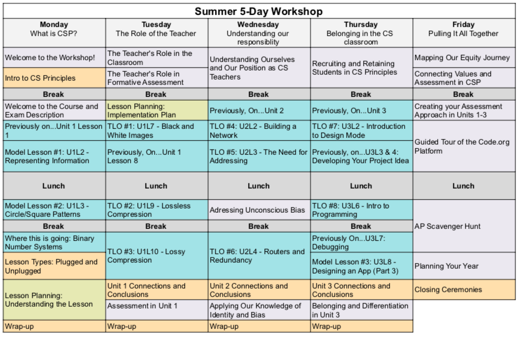
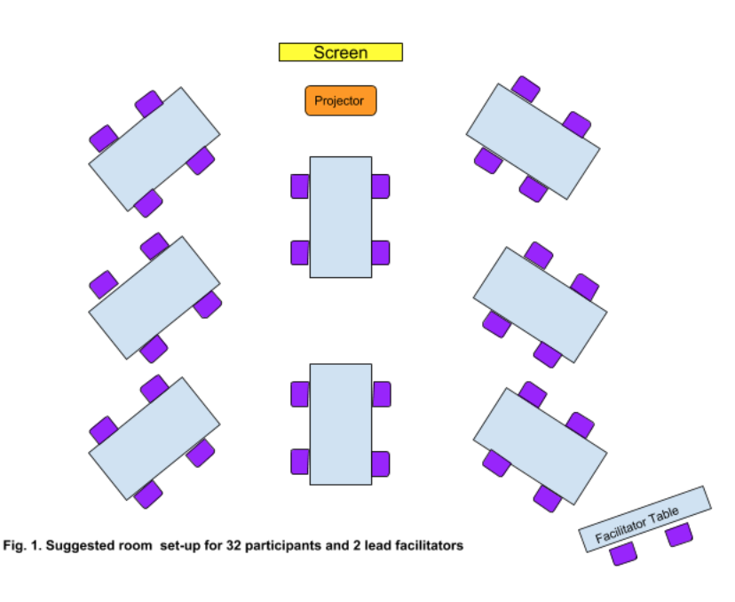

2021 CS Principles Summer Workshop

This is the detailed facilitator agenda for Local Summer Workshops 2021. This agenda is intended for Local Summer Workshops which are 5-day in person trainings to prepare teachers to start teaching CS Principles. It focuses on the first three units of the course.
Printing Agendas
- PDF of Local Workshop Detailed Agenda
- For the high level agenda(like one on the right) that is printable and editable go to: Google Sheet View of High Level Agenda
Goals
In the Local Summer Workshop, teacher participants will …
- Understand the curriculum
- Transform practice
- Develop empathy with the student experience
- Become part of a network of teachers who are doing similar work
Supplies
Provided By the Workshop Organizer (Regional Partner):
- Room set up for table groups of 4-5 teachers, with: reliable wifi, Power Strips, Projector, and Speakers.
- Workshop Materials: 24 Pens, 2 Easel Pads, 10 Large 3x4 Post-it Notes, 16 Medium 3x3 Post-it Notes, 12 Small 1x2 Post-it Notes, 8 sets 8-pack Markers, Blue Painter's Tape, Scissors, Journal
- Course and Lesson Supplies: Printed Activity Packet (1 per person), Printed CS Principles Curriculum Guide (1 per person), Printed copies of the Course Exam and Description Guide (1 per person), 2 Printed Copies of Each Lesson Plan Per Lesson Planning Group, Copies of Circle-square activity handout (1 per group)
Teachers Should Bring:
- Computers
Preparing for the workshop with your co-facilitator.
Connect with your Regional Partner
Prior to the workshop, find time to meet in person or virtually with both facilitators and the Regional Partner to discuss:
| Subject | Conversation Points |
|---|---|
| Supplies |
|
| Online Workshop Dashboard |
|
| Venue |
|
| Workshop Timeframe |
|
| Food |
|
| Agenda |
|
| Staff |
|
Prepare for Sessions
Review Materials
On your own review the following materials so you are familiar with the details of each.
| Facilitator Materials | Model Lessons | TLO Lessons | Teacher Materials |
|---|---|---|---|
|
|
|
Make a plan
Below is guidance for specific sessions about things you should plan for. Not every session is include below. You should of course go through every session to make a plan for how you and your co-facilitator will support each other in running the session.
| Session | Planning Considerations |
|---|---|
| General Considerations For All Sessions |
|
| Introductions |
|
| Overview of the Course |
|
| Model Lessons |
|
| Lesson Planning |
|
| TLOs |
|
Create Materials For Region
- A copy of each day of the slides for the workshop, that you have updated according to your needs.
- Set up a section for your workshop participants to join. For more details on this process, check out the the support article for creating a classroom section
- Create a new section using the email login type
- Make sure it is assigned to CS Principles for 2020-2021
- Enable Pair Programming for that section
First Morning Of Workshop
Room Setup
Using the supplies provided by regional partner set up the room. In the agenda we will call this the "Normal Breakout Room Set Up".

- Tech
- Reliable guest wifi - check this as early as possible
- Projector (separate table for projector)
- Speaker System
- 8 Teacher Tables (for 32 teachers) with:
- 4 chairs at each table
- Table angled toward projector screen
- Surge protectors in middle of each table
- 4-5 post-it note pads of different sizes
- 3-4 Pens
- Facilitator Table:
- Located in the back of the room
- 2-3 chairs at table (need chairs for lead facilitators and apprentices)
Create Posters
- Posters up for people to add post-its to as they come in
- Question Parking Lot - For people to put up questions they have.
- Create a poster with the map of the State(s) in your region that everyone can put a post it on to say where they are from
- Create a poster with graph number of years of teaching experience
- Create a poster with graph of number of years of computer science experience (any kind)
- Create a poster that just says random skills
Concerns?
If you need to raise concerns before or during the workshop about issues that require immediate attention (internet, health issues, etc.) you should contact your Regional Partner.